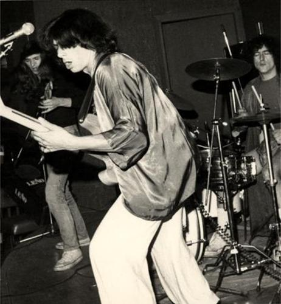
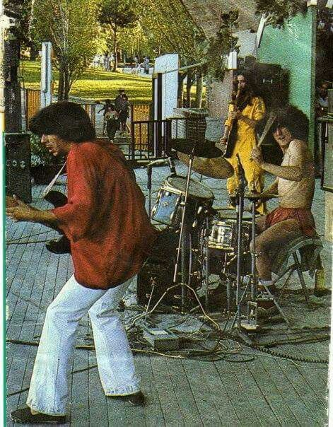

Isidoro «Chiqui» Mariscal
Bajo · Etapa inicial (1985–1987)

Biografía
Isidoro «Chiqui» Mariscal fue una de esas figuras que no buscan el foco, pero sin las cuales la historia no suena igual. Bajista de pulso firme y mirada callejera, fue parte esencial del nacimiento del rock urbano español, cuando aún no tenía nombre ni reglas.
Su forma de tocar el bajo no era ornamental: era cimiento. Chiqui entendía el ritmo como un lenguaje directo, sin florituras, hecho para sostener canciones que hablaban de barrio, desencanto y resistencia.

Trayectoria con Rosendo
Tras la disolución de Leño, Chiqui acompañó a Rosendo Mercado en los primeros pasos de su carrera en solitario. Aquellos años fueron de búsqueda, de probar caminos y de levantar un nuevo sonido desde cero.
Su participación en el álbum «Fuera de lugar» (1986) dejó huella en una etapa cruda y experimental, donde el bajo no se limitaba a acompañar: empujaba, discutía y marcaba territorio.
Legado
Chiqui Mariscal falleció en enero de 2008, pero su legado sigue vivo en cada músico que entiende el rock como un acto honesto. No buscó protagonismo ni reconocimiento masivo, pero dejó algo más importante: respeto.
Su manera de tocar enseñó que el bajo también puede contar historias, sostener discursos y dar carácter a una banda sin levantar la voz.
«Chiqui era pura clase. El bajo que necesitaba el rock urbano: firme, honesto y sin trampas.»
— Rosendo Mercado